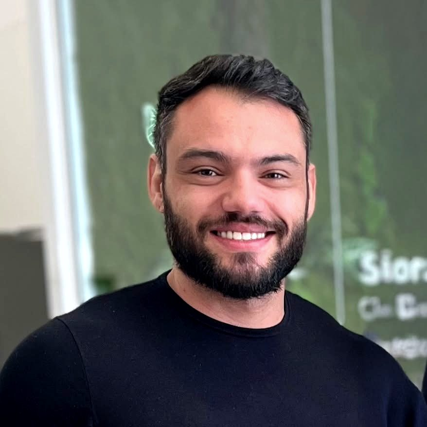
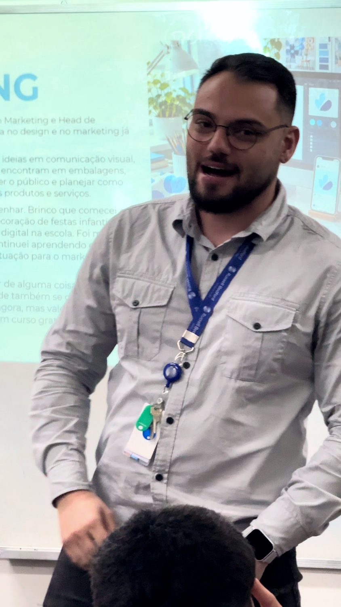
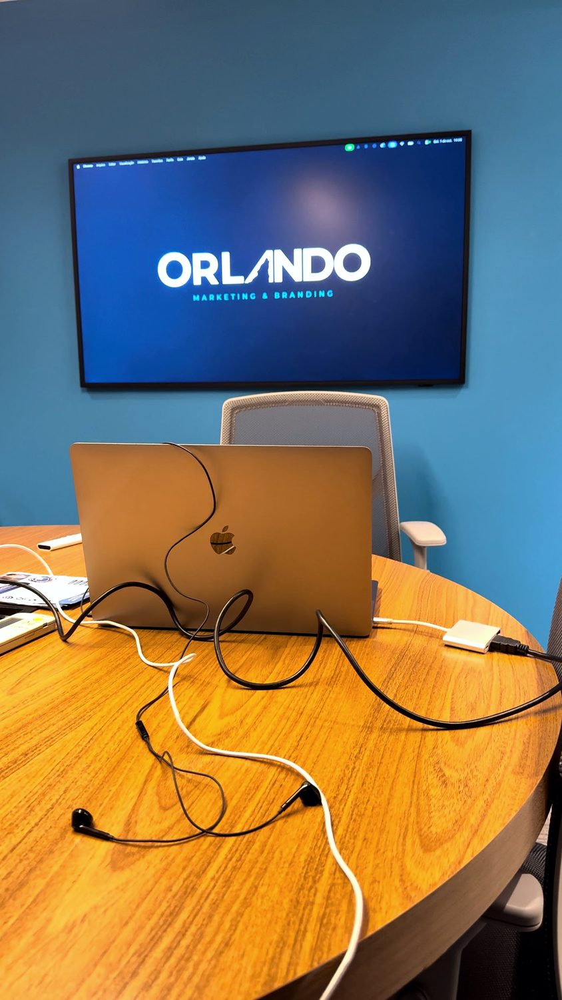

Sobre Matheus
Estratégia com os pés no negócio.
Sou Matheus Orlando, tecnólogo em Marketing e fundador da ORLANDO. Trabalho com posicionamento, marca, planejamento e conexão entre marketing e comercial.
Minha atuação é especialmente voltada a empresas de serviços B2B: negócios que precisam explicar melhor sua entrega, organizar prioridades e tornar a comunicação coerente com a operação.

Uma visão construída entre estratégia e execução.
- Agibank
- GA Corte e Conformação
- Sesc/RS
- Russell Bedford Brasil
Minha experiência passa por Agibank, GA Corte e Conformação, Sesc/RS e Russell Bedford Brasil, em contextos de marketing, CRM, captação e atividade comercial. São experiências de diferentes períodos e escopos, não uma lista de clientes atuais da ORLANDO.
Na ORLANDO, essa trajetória se transforma em diagnóstico, direcionamento de marca e planejamento de marketing. Nos treinamentos, ela orienta a escolha de problemas concretos, exercícios e critérios de decisão.
Também sou autor de Renda Extra na Prática e criador do podcast Decisões que Marcam. Uso IA como apoio à organização e à análise, com revisão humana das informações e decisões.



Um espaço autoral. Uma empresa por trás dos projetos.
Este site reúne minha atuação profissional, formações e conteúdos. A ORLANDO — Marcas e Estratégia é a empresa por meio da qual desenvolvo os projetos de marca e marketing. A contratação começa pelo entendimento do contexto e pela definição de escopo.

Qual decisão precisa
ficar mais clara?
Conte o contexto, o público e o desafio. A proposta parte dessa conversa.